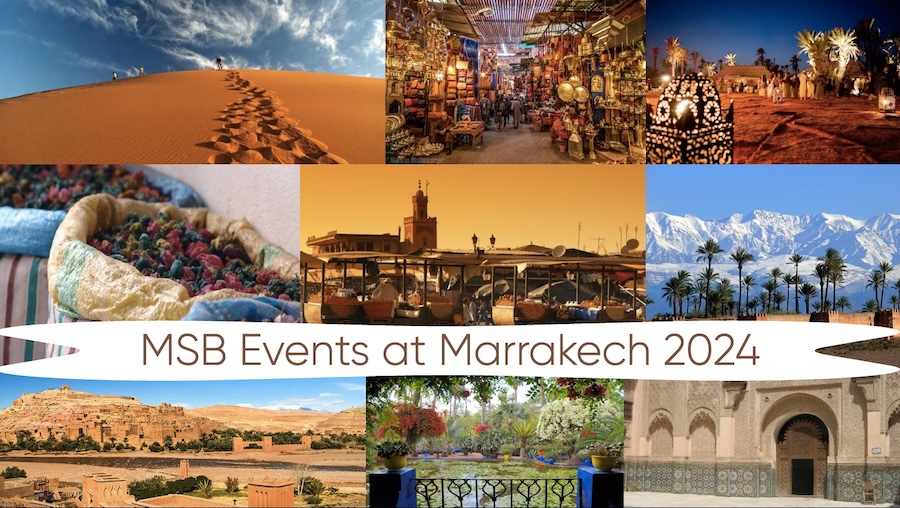
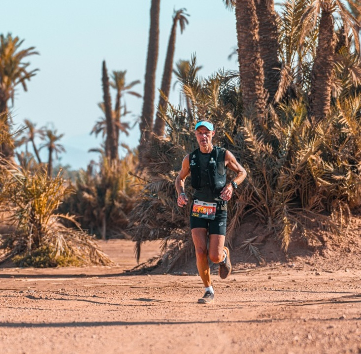
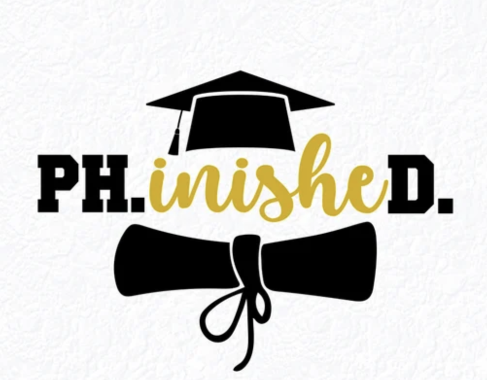
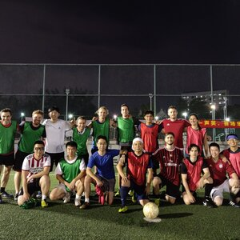
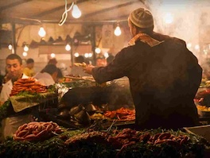
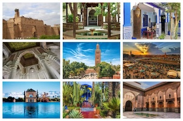

Participate in MSB Events at MICCAI 2024

Explore Marrakech!
Registration Required - Limited Seats Available
Scroll down for more details!
October 6th, 2024 (Sunday)
First MSB EMERGE Workshop

The MSB EMERGE workshop is a half-day workshop fully organized by students and designed for students to present their research and support them in their journey to become independent investigators and mentors. We encourage early-career researchers - maximum two years post Ph.D. - to be primary investigators and occupy the first and/or last author positions. Another unique feature of our workshop is the dedicated panel of experts who will engage in discussion with the presenters to provide constructive feedback on extending their work to a journal submission. We publish the accepted papers in Springer LNCS workshop proceedings and provide an invitation to submit as full extended papers in MELBA journal. This initiative also aligns with one of our primary objectives to enhance diversity within our community further. For more details, visit: https://miccaimsb.github.io/emerge/.
October 7th/8th, 2024 (Monday and Tuesday)
Morning Runs

Kickstart your day with a breathtaking sunrise run through our resort's scenic paths. Choose between our expertly designed road running routes or the picturesque golf course circuit, surrounded by the natural beauty of palm groves and olive trees. It's a wonderful opportunity to connect with fellow MICCAI attendees, invigorate your spirit, and set the pace for the day. Lace up your running shoes, bring your smiles, register, and join us in welcoming the new day! All fitness levels are welcome.
October 7th, 2024 (Monday @ Evening)
Academia and Industry Panel and Networking Event

The MSB has a goal to provide opportunities for professional development and networking. The A&I event educates current students on career possibilities post graduation, and provides students a venue to ask questions related to professional development. The A&I event will begin at 6 PM on the first day of the main conference with a one-hour moderated panel discussion on career development and the differences between academic and corporate research. Panelists are selected to represent a diverse set of backgrounds, perspectives and experiences. The second hour of the A&I event will feature a networking session structured in a speed-dating style.
October 8th, 2024 (Tuesday @ Lunch)
MSB Lunch and PhD Thesis Madness
 The Thesis Madness event allows final-year Ph.D. students and freshly finished doctorates to showcase their groundbreaking work in a short framework. The event will take place during the lunch and will offer the opportunity for upcoming researchers to connect, collaborate, and construct new ideas. Lunch will be provided at the venue.
Top three winners will receive $300/$200/$100 and an award certificate.
October 9th, 2024 (Wednesday @ Evening)
MICCAI Soccer Game

The traditional MICCAI soccer game will return this year! It will take place on two fields for 5-vs-5. Participants will be transported to and from the event. The game will be hosted at 7 P.M. on October 9th evening.
LIMITED SEATS, REGISTRATION REQUIRED. Now OPEN on the main conference registration portal.October 10th, 2024 (Thursday @ Evening)
Marrakech Cultural Food Tasting and Walking Tour

The 3 to 4-hour food tour offers attendees an ideal introduction to the history, cultural traditions, and especially Moroccan gastronomy. Throughout the walking tour, participants would have the opportunity to sample from local vendors purveying classics of Moroccan cuisine while learning about the historical background from knowledgeable tour guides. The experience features 3 tasting stops with dishes that capture the local cuisine of Marrakech and culinary history of Morocco. This will be followed by three courses dinner. The tour is designed to accommodate vegetarian and vegan diets (and other dietary restrictions). Participants will be transported to and from the event.
LIMITED SEATS, REGISTRATION REQUIRED. Now OPEN on the main conference registration portal.October 11th, 2024 (Friday)
Marrakech Full Day Guided City and Gardens Tour

The full day tour leads participants on a rich journey to historical sites in the city of Marrakech. The opulent Bahia Palace will provide a stunning example of 19th-century Moroccan architecture, after which participants may seek the tranquility of the Ben Youssef Madrasa, adorned with intricate tilework from the 14th century. In the afternoon, they will venture to the new city to explore the Majorelle Gardens, a wonderful oasis created by Jacques Majorelle, Yves Saint-Laurent and Pierre Bergé. The day concludes at the vibrant Jemaa el-Fnaa square, where centuries of history come alive amidst bustling markets and captivating street performances. Participants will be transported to and from the event.
LIMITED SEATS, REGISTRATION REQUIRED. Now OPEN on the main conference registration portal.
The MICCAI Society is committed to ensuring a safe and welcoming experience for all who attend MICCAI Society events. Read the Code of Conduct policy to learn what's expected. As a participant of a MICCAI event, you agree to abide by this Code of Conduct.